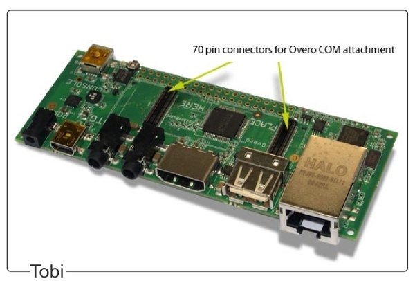
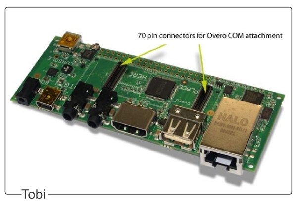

Getting started with Gumstix Overo¶
Mounting Gumstix COM on the Tobi Expansion Board¶
The configuration of Gumstix Overo computers consists of a module computer and an expansion board. The Overo module connects to a Tobi expansion board via the two 70-pin AVX connectors located on the bottom of the COM. Place the Tobi board on a flat, anti-aesthetic surface, align the COM with the white outline on the board above the connectors and gently press the COM until it snaps into place.
 

To use the camera, the camera board must be connected to the top of the Overo COM via a ribbon cable.
Overo Connections¶

The Tobi expansion card comes with a USB Host port and a USB On-the-Go (OTG). The USB Host port is used exclusively to connect peripherals to the system, while the USB OTG port can be used to connect peripherals via USB OTG cable or to connect the Gumstix system as a peripheral to a separate host system.
The USB Host port uses a current of 500 mA and accepts a High-speed (HS)signaling rate at 480 Mbit/s, while the USB OTG port has a current of 100 mA and supports three different signaling rates, Low Speed (LS) at 1.5 Mbit/s, Full Speed (FS) at 12 Mbit/s and High Speed (HS) at 480 Mbit/s.
Note
Many USB peripherals use a signaling rate of Full-Speed (FS) and do not work on the USB Host port, which is only High Speed (HS). If you are having trouble connecting USB peripherals directly to the Gumstix system, connecting the peripherals first to a powered USB hub and then connecting the powered hub to the Gumstix system will usually solve the problem.
For connecting more peripherals, in addition to the number of USB ports available on the Tobi expansion card, we recommend using a USB hub. The powered USB hub must be connected to the USB Host port and a non-powered USB hub must be connected to the USB OTG port with a USB On-the-Go cable.
Tip
The video Connecting Gumstix Tobi Expansion Board to Video Monitor demonstrates how to connect an Overo COM to a monitor and some peripherals via the Tobi board.
Connecting to Overo¶
First, insert your microSD card with the operating system image in the card slot at the top of Overo COM. Make sure it fits securely in place.
The Overo computer can be accessed by connecting it to another Linux or Windows computer, or even be connected directly to a DVI monitor and connected to various peripherals, such as mouse, keyboard, monitor, sound output, among others, through the Tobi expansion board.
In this work, we will choose to connect it to a Linux computer and establish a serious connection via the USB Console port for simplicity.
Establishing a serial connection via console¶
To connect the embedded computer to the host computer, connect a USB cable to the computer and to the USB console of the Tobi expansion board. Once this is done, a green light should come on indicating the correct connection. Then check which serial communication port Gumstix COM is connected to, in Windows this can be checked by accessing Device Manager and then Ports (COM and LPT). On Linux, just run the command:
$ dmesg | grep tty
Note
The dmesg command is a command that prints the core messages which, in most cases, are messages from the device drivers. When we add `` grep tty``we are performing a search on the outputs of the `` dmesg`` function for the term tty and restricting its output to those messages that contain this term.
The Gumstix card should be the last entry to appear. For example:
user@Ubuntu:~$ dmesg | grep tty
[ 0.000000] printk: console [tty0] enabled
[ 4214.120990] usb 2-1: FTDI USB Serial Device converter now attached to **ttyUSB0**
Then it will be necessary to run a program to emulate the terminal, we recommend the Screen program for Linux OS. If you have not yet installed it, just run the command line sudo apt-get install screen. Or in the case of the Windows OS, PuTTY is recommended. These programs emulate terminals and perform only the task of printing the characters received through the serial port, or USB in this case, and sending the characters typed through that same port.
To start communication by terminal with Gumstix Overo, just run the following command line:
$ sudo screen /dev/<USB Device Name> 115200
In the case of the command line in the example presented above, the term ttyUSB0 was the port found when using the command dmesg and "115200" is the communication speed in baud. At this point, communication between Gumstix and the computer must be established and as soon as the Gumstix is turned on, the characters must begin to be printed on the computer screen.
Booting the Overo COM¶
Once connected to the console, Overo COM will be ready to be turned on. To boot the system, simply connect the 5 Volt power supply to your expansion card. The LED indicators on the COM should light up in blue and green. The boot process will be displayed on your host machine's terminal.
However, before turning it on, it is important to comment that the manufacturer recommends cleaning variables from flash memory whenever starting a new version of the operating system on the embedded computer for the first time. To do this, simply interrupt the boot process by pressing any key before it starts at the moment when the message "Hit any key to stop autoboot" and a countdown on the screen appears. The typical startup process will be similar to the following:
reading u-boot.img
reading u-boot.img
U-Boot 2012.04.01 (Jul 19 2012 - 17:31:34)
OMAP36XX/37XX-GP ES1.2, CPU-OPP2, L3-165MHz, Max CPU Clock 1 Ghz
Gumstix Overo board + LPDDR/NAND
I2C: ready
DRAM: 512 MiB
NAND: 512 MiB
MMC: OMAP SD/MMC: 0
In: serial
Out: serial
Err: serial
Board revision: 1
Direct connection on mmc2
timed out in wait_for_pin: I2C_STAT=1000
I2C read: I/O error
Unrecognized expansion board
Die ID #2d3800229ff8000001683b060a00b012
Net: smc911x-0
Hit any key to stop autoboot: 0
Overo #
Once the system boot is interrupted, just execute the command nand erase 240000 20000 to clear the saved variables and reset to restart the boot process, as shown below:
# nand erase 240000 20000
# reset
Note
If the blue and green LEDs on the COM do not light up and nothing appears on your terminal, try pressing the reset button on the expansion card until you see a boot process. If the problem persists, the image may not have been installed successfully. It is recommended that you try to install again or use a different image.
The following figure illustrates this procedure. The characters are printed quickly, and the time count is only 1 second for the cores of the Yocto project, so it is necessary to be attentive to interrupt the process.
Once this is done, the boot process should start, and several messages will appear on the screen. It is important to check, the first time the operating system is started, that no error message appears and, if all goes well, a password will be required at the end of the process; if the embedded computer has reached this point, everything is probably in order. The password to access the Yocto system is "root" and for the Ubuntu Gumstix system, if necessary, the password is the same as the user.
Saving the OS image to flash memory¶
The Gumstix Overo WaterSTORM COM has a non-volatile internal memory of 1 GB of the Flash type, enough memory to store the operating system. Although the most recommended is to continue using the SD card because it has more memory and is easily transferred between devices, having the operating system saved in the flash memory of the embedded computer can be useful.
The manufacturer's website describes four different ways to perform this procedure. The way that presented the best result was the last of the options explained and it is summarized to install in the flash memory everything that was installed in the memory card added to the core binary through a script provided in its website. The desired script is available in Flashing with U-Boot - Write Images to Flash, however, the entire process will be described in detail below.
With the bootable SD card connected to your host computer, access the /boot directory on the ** rootfs ** partition. For example, if rootfs is mounted on /media/<User_Name>/rootfs/:
$ cd /media/<User_Name>/rootfs/boot
We must store in the boot folder of the rootfs partition the new MLO, u-boot.img and core binary. Note that these bootloaders that will be added to the boot folder are not the same as those in the boot partition, as these new bootloaders must be specific to operate from flash memory. These new files can be obtained with the following commands:
$ sudo wget https://s3-us-west-2.amazonaws.com/gumstix-yocto/2015-02-25/overo/master/MLO
$ sudo wget https://s3-us-west-2.amazonaws.com/gumstix-yocto/2015-02-25/overo/master/u-boot.img
$ sudo wget https://s3-us-west-2.amazonaws.com/gumstix-yocto/2015-02-25/overo/master/gumstix-console-image-overo.ubi -O rootfs.ubi
Create a script to save the files in the flash memory with the name flash-all.cmd. To do this, simply execute the command:
$ sudo nano flash-all.cmd
Copy and paste the script:
nand erase.chip
# switch to 1-bit ECC and write MLO
load mmc 0:2 ${loadaddr} /boot/MLO
nandecc hw
nand write ${loadaddr} 0x0 ${filesize}
nand write ${loadaddr} 0x20000 ${filesize}
nand write ${loadaddr} 0x40000 ${filesize}
nand write ${loadaddr} 0x60000 ${filesize}
# switch back to BCH8 and write u-boot
nandecc sw bch8
load mmc 0:2 ${loadaddr} /boot/u-boot.img
nand write ${loadaddr} u-boot ${filesize}
# write the kernel (if uImage...otherwise skip)
load mmc 0:2 ${loadaddr} /boot/uImage
nand write ${loadaddr} linux ${filesize}
# write the filesystem
load mmc 0:2 ${loadaddr} /boot/rootfs.ubi
nand write ${loadaddr} rootfs ${filesize}
Then confirm the file name (Ctrl+O) and exit the text editor (Ctrl+X).
To make the script executable and add it to the boot partition of the bootable SD card, simply run the following command line (assuming the boot partition is mounted on /media/<User_Name>/boot):
Warning
Remember to edit the filenames in the script to match the filenames that will be added next.
$ mkimage -A arm -O linux -T script -C none -a 0 -e 0 -n "flash-all" -d flash-all.cmd /media/<User_Name>/boot/flash-all.scr

Note
If the command mkimage is not found, just run the command sudo apt install u-boot-tools to install the tool package on your computer. The command mkimage is a command used to make images for use by u-boot. Command options and explanations are easily obtained by typing man mkimage in the Linux terminal.
Unmount the SD card and insert it into your embedded computer, start the system and wait for u-boot to load. Stop the startup process when you see "Hit any key to stop autoboot" and enter the command:
# mmc rescan 0; load mmc 0 ${loadaddr} flash-all.scr; source ${loadaddr}
This command line will execute the script passing the bootloaders, the core binary and the root files of the operating system to the flash memory of the embedded system and the messages shown in the figure below should be printed.
Remove the SD card and restart your system. If everything went well, your system should start up normally.
References¶
PITA, H. C. Desenvolvimento de sistema de comunicação multiplataforma para veículos aéreos de asa fixa. Faculdade de Tecnologia, Universidade de Brasília, 2018.
4. Boot Your System - gumstix.com
Write Images to Flash - gumstix.com